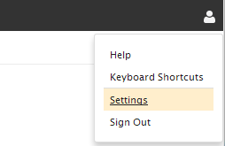
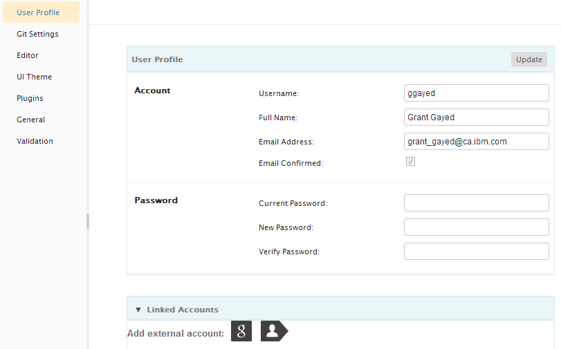

You can access your user options page by clicking on the Options image on the right hand side of the page header and choosing Settings.

From this page you have several sections covering everything from your profile information, UI Themes, General settings and Plugins. You can use the Profile section to change your password. Make any desired changes in the text fields, and then click Update in the page.
It is important to always keep a current email address associated with your Orion profile. This email address will only be used to enable the Orion server to communicate with you, such as performing an automated password reset. If you forget your password and there is no valid email address on your profile, you will need manual assistance from your server administrator.
You can also use the Profile section to link an external Google OpenID to your Orion profile. Click the Google OpenID buttons in the Linked Accounts section to connect a GoogleID account to Orion. This will allow you to login to Orion by clicking the Google OpenID icon on the Orion Login page. Note that this does not share any personal information from that account with Orion. It simply allows the external service to confirm your identity, so you have one less password to worry about remembering. To use Mozilla Persona on your profile, your email address needs to match the email address for your Persona login. There is no association step.

This document is maintained in a collaborative wiki. If you wish to update or modify this document please visit http://wiki.eclipse.org/Orion/Documentation/User_Guide/Reference/Profile_page